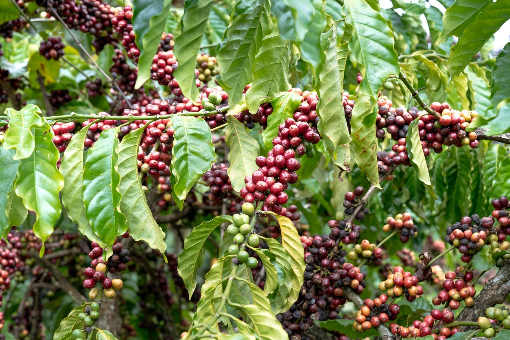
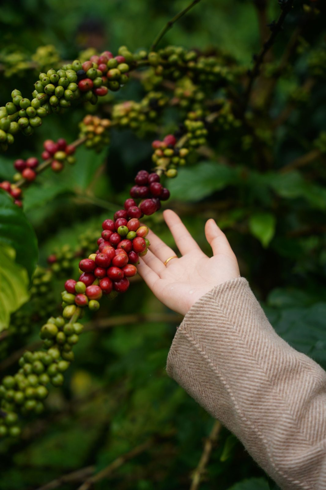
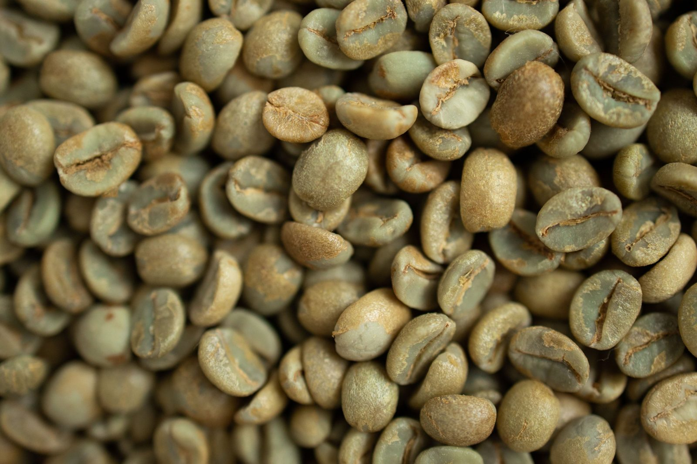
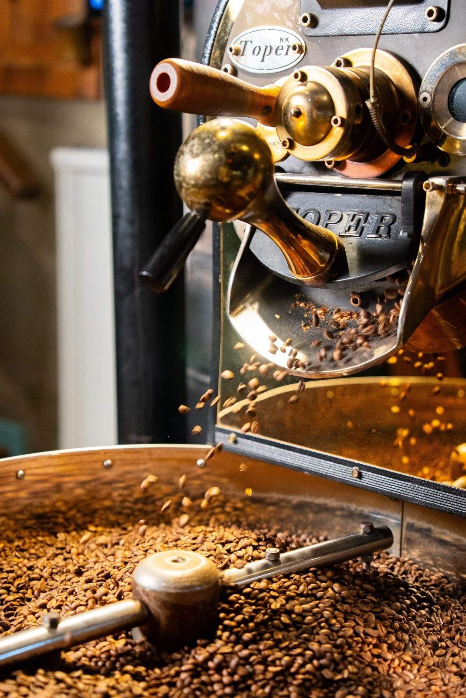
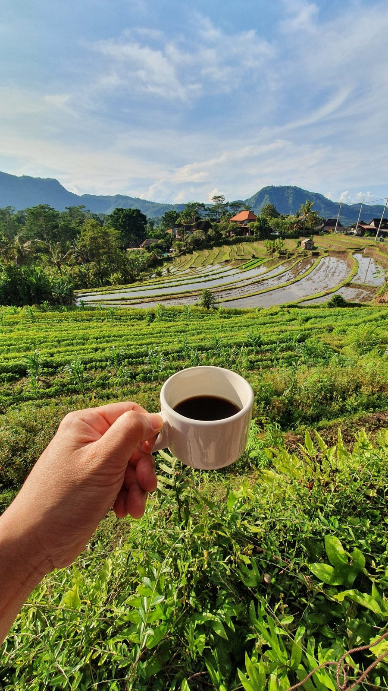

Step 1 · Origin
Coffee cherries
Cherries ripening on the branch.
Coffee
I fell for coffee while living in Switzerland and learned to roast it in Minnesota. What keeps me interested is how much of the cup you can trace back to one place and one decision.
How it started
In Switzerland I started paying attention to what was in the cup: where it came from, how it was roasted, how fresh it was. Coffee there is a daily ritual, and it changed how I drink it.
Back in the United States I went to Minnesota to learn roasting properly. Roasting turned out to suit how I work: watch the signals, adjust early, repeat what works. It is the same habit that keeps IT systems steady.
Why single origin
A single-origin coffee comes from one farm, region or lot. You can taste where it grew: the fruit, the acidity, the sweetness. A blend hides that on purpose. A single origin shows it.
Pair it with a fresh roast and the difference is clear. Fresh beans have more aroma and more life in the cup. More people are discovering this, and the interest keeps growing.
The journey
One farm, one lot, one harvest. Altitude, soil and variety shape the cup before anyone roasts a bean.
Ripe cherries picked at the right time. This is where much of the quality is decided.
Drying and fermentation set the flavor direction: clean and bright, or fruity and heavy.
Roasting develops sugars and acids. I watch color, aroma and the first crack, and adjust early.
Coffee tastes best days to weeks after roasting, once it has rested a little.
In pictures

Cherries ripening on the branch.

Ripe red cherries are picked, green ones are left.

Washed, dried and ready to roast.

Heat turns green beans into brown, aromatic coffee.

Brewed days after roasting.
Videos
Checking the plants.
Beans turning in the drum.
Hand-checking the beans.
Fresh from the roaster.
The finished cup.
Coffee photos and videos are free stock photography from Unsplash and Pexels. My own photos and videos will replace them over time.
More